Modding FA shapes with Claude
和 Claude 一起改 FA 外形
How the new F-14 and F/A-18 on this site were made. I used to rebuild one Fighters Anthology model in about half a year. This time I put every FA file on GitHub and worked with Claude Code, back and forth, and in a few days we had reshaped jets, new weapons on the pylons, an animated afterburner and landing gear with spinning wheels.
這個網站上新的 F-14 和 F/A-18 是怎麼做出來的。以前我改一架 Fighters Anthology 的模型大約要半年。這次我把 FA 的所有檔案放上 GitHub，和 Claude Code 一來一往地反覆修改、核對，幾天之內就有了外形修整過的飛機、掛在派龍架上的新武器、會動的後燃器火焰，以及輪子會轉的起落架。
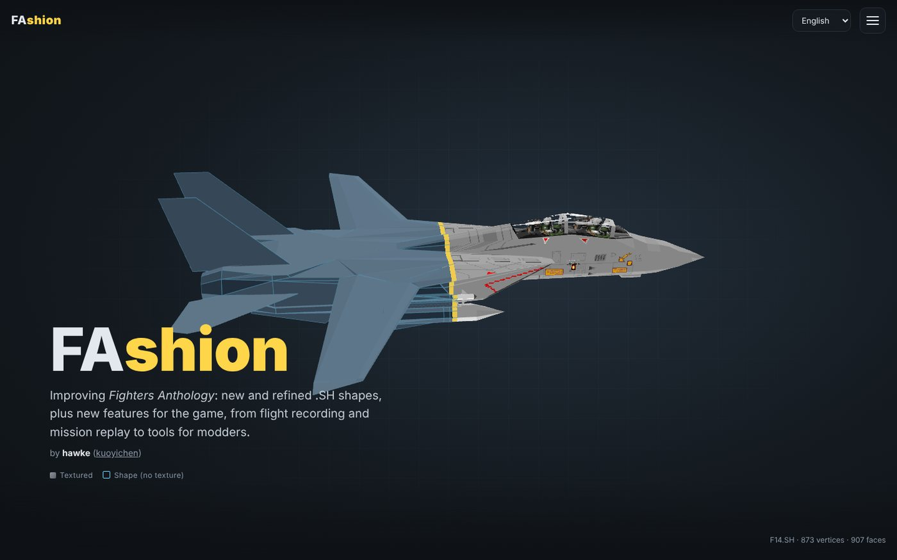
Where I started. I am the author of the old FAshion tool. For years my way of making a new FA shape was the same: use fash to pull the vertex cloud and the faces out of an .SH file, edit them in SketchUp, and save them back. It works, but it is a lot of manual labour. One model took me about half a year, and some things could not be done at all: the face normals, for one, could not be edited.
When I wanted to make the two-seat F/A-18F, I tried something new: I uploaded all of FA's files (SH shapes, PT aircraft data, PIC textures and FA.EXE itself) to GitHub and asked Claude Code to work on them with me, checking each step in the game. Then I found that Claude could do things my old tools never could: add new vertices and faces, and rewrite or add x86 code, both inside the SH files and in FA.EXE.
從哪裡開始。我是舊版 FAshion 工具的作者。這些年來我做新 FA 外形的方法都一樣：用 fash 把 .SH 檔的頂點雲和面解出來，在 SketchUp 裡編輯，再存回去。這樣做可行，但非常費力。一個模型大約要花半年，而且有些東西根本改不了，例如面的法向量。
為了做雙座的 F/A-18F，我試了新的方法：把 FA 的所有檔案（SH 外形、PT 飛機資料、PIC 貼圖，連 FA.EXE 本身）都上傳到 GitHub，請 Claude Code 跟我一起改，每一步都進遊戲核對。結果發現 Claude 能做到我以前的工具做不到的事：增加點雲和面，還能改寫或增加 x86 程式碼，不論是在 SH 檔裡還是在 FA.EXE 裡。
The old way and the new way舊方法與新方法
Before: fash + SketchUp
- Extract vertices and faces with
fash. - Move points by hand in SketchUp, then save back.
- Normals cannot be edited, so lighting goes wrong where the shape changed.
- No way to add moving parts or new behaviour.
- About half a year per model.
Now: GitHub + Claude Code
- All SH, PT, PIC files and FA.EXE in one repository.
- Claude reads the bytecode, writes a Python generator for each change, and renders previews from several angles.
- Normals, Gouraud vertex shades and draw order are recomputed for every edit.
- New vertices, faces, parts, textures and x86 code can be added.
- A test file in my SH folder within minutes; I fly it and report back.
以前：fash + SketchUp
- 用
fash解出頂點和面。 - 在 SketchUp 裡手動移點，再存回去。
- 法向量改不了，外形一改，那裡的光影就不對。
- 沒辦法加會動的零件或新的行為。
- 一個模型大約半年。
現在：GitHub + Claude Code
- 所有 SH、PT、PIC 檔和 FA.EXE 都在同一個專案裡。
- Claude 讀懂位元組碼，每個修改都寫成一支 Python 產生器，並從好幾個角度算出預覽圖。
- 每次修改都會重算法向量、Gouraud 頂點明暗和繪製順序。
- 可以加新的頂點、面、零件、貼圖和 x86 程式碼。
- 幾分鐘內測試檔就出現在我的 SH 資料夾；我進遊戲飛，再回報。
How we work together我們怎麼合作
Every feature on this page went around this loop several times. Nothing went into a release until I had flown it in the real game.
這一頁上的每個功能都跑過這個循環好幾次。沒有在真正的遊戲裡飛過，就不會放進發布。
- I describe what I want, in plain words, with in-game screenshots or a side-view drawing of the real jet: “the nose tip should sit on the centreline”, “the wheels should spin faster with speed and stop above 190 knots”.
- Claude finds out how FA does it. It reads the SH bytecode and disassembles FA.EXE to learn the rules: which opcode draws a face, where the gear position is stored, how fast the aircraft is moving.
- Claude writes a generator script (in
tools/shgen/) that starts from the original file and applies the change, so every version can be rebuilt and compared. - Claude renders previews from the top, side, below and three-quarter views, and tests x86 code in an emulator (Unicorn) before it ever reaches the game.
- The test file goes straight to my computer, numbered in order (
F14-36.SH,F14-37.SH, …) so I always know which one I am flying. - I fly it in FA and report back. “Really good, it spins.” Or: “the right wheel is missing”, “the game says Not enough memory”. Then we go round again.
- When I approve it, it is merged to GitHub and this website updates by itself.
- 我說明想要什麼，用一般的話，加上遊戲截圖或真機的側視圖：「機鼻尖端要在機身中心線上」、「輪子要隨速度轉得越快，超過 190 節就停」。
- Claude 去找 FA 是怎麼做的。它讀 SH 位元組碼，反組譯 FA.EXE，弄清楚規則：哪個指令畫一個面、起落架的位置存在哪裡、飛機現在飛多快。
- Claude 寫一支產生器（在
tools/shgen/），從原始檔開始套用修改，所以每個版本都能重建、比較。 - Claude 算出預覽圖：上、側、下和斜四分之三視角；x86 程式先在模擬器（Unicorn）裡測過，才會進遊戲。
- 測試檔直接送到我的電腦，依序編號（
F14-36.SH、F14-37.SH…），我永遠知道自己在飛哪一版。 - 我進 FA 飛，然後回報。「很好，會轉了。」或者：「右邊的輪子不見了」、「遊戲跳出 Not enough memory」。然後再跑一輪。
- 我說可以了，就合併到 GitHub，這個網站會自動更新。
What Claude can do that my old tools could notClaude 做得到、我以前的工具做不到的事
sh_renormal.py recomputes each face's normal and plane point. On the F/A-18E alone, 380 faces were fixed.sh_renormal.py 會重算每個面的法向量和平面上的點。光是 F/A-18E 就修了 380 個面。The F/A-18: where it startedF/A-18：一切的開始
The F/A-18F was the reason for all of this. I started the way I always had, moving vertices of the factory F18C by hand to make a Super Hornet (F18E). The difference was what happened next.
F/A-18F 是這一切的起因。我一開始還是用老方法，手動移動原廠 F18C 的頂點，做出 Super Hornet（F18E）。不同的是接下來發生的事。
The hand-moved F18E had 380 faces whose normals no longer matched. They were recomputed and written back in place. For the first time, an edited shape lit correctly in the game.
Instead of redoing the work on the two-seat F18.SH, the single-seat edit was carried across: matching vertices move exactly, the rest are interpolated with symmetry, then renormalled.
I saw gaps at the wing root, the LEX and the flaps. The cause was broken T-junctions and flap parts that no longer met the wing. A tool restores them against the original file.
I asked for a straight flap inner edge. Two versions later I asked to go back: the fuselage narrows there, so a straight edge leaves a fixed piece of wing next to the moving flap. We rolled back to the version I liked and kept only the fixes that helped. Every step had a backup, so going back was easy.
The medium and low detail models were morphed from the same edit, so the wingtips match at every distance.
Tapered yellow stripes painted texel by texel, the Growler's jamming pods and tanks as new parts, all in the first release on Nov 14.
手動移過點的 F18E 有 380 個面的法向量對不上。全部重算後寫回原位。改過的外形第一次在遊戲裡光影正確。
不必在雙座的 F18.SH 上重做一遍，而是把單座的修改搬過去：對得上的頂點照搬，其他的依對稱內插，再重算法向量。
我在翼根、邊條和襟翼看到縫隙。原因是 T 型接點斷開，以及襟翼零件和機翼不再貼合。工具會對照原始檔把它們修回來。
我要襟翼內緣是一直線。改了兩版後我要求改回來：那裡機身變窄，直的內緣會在會動的襟翼旁邊留下一塊固定的機翼。我們退回我喜歡的那一版，只保留有用的修正。每一步都有備份，所以退回很容易。
中、低細節模型也用同一份修改變形，所以不論多遠，翼尖都對得上。
逐像素畫出漸尖的黃色條紋、Growler 的干擾莢艙和副油箱都是新零件，全都在 11 月 14 日的第一次發布裡。
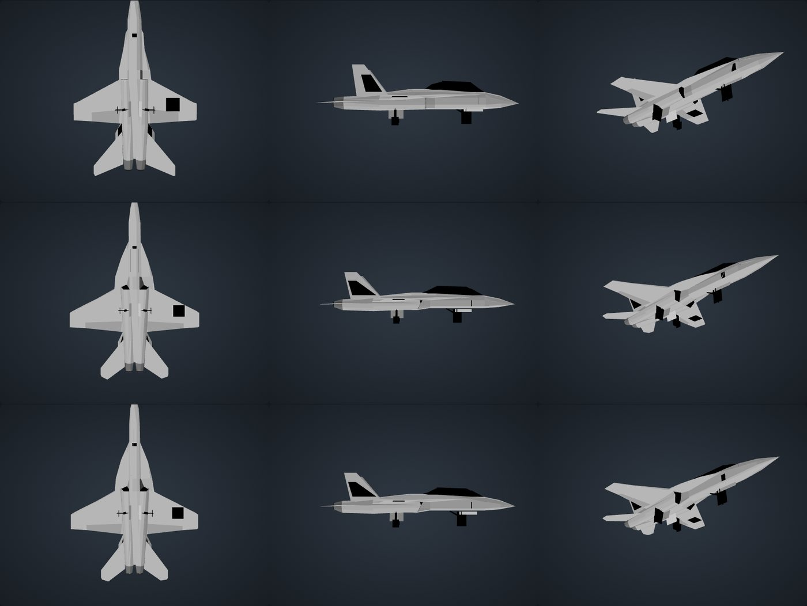
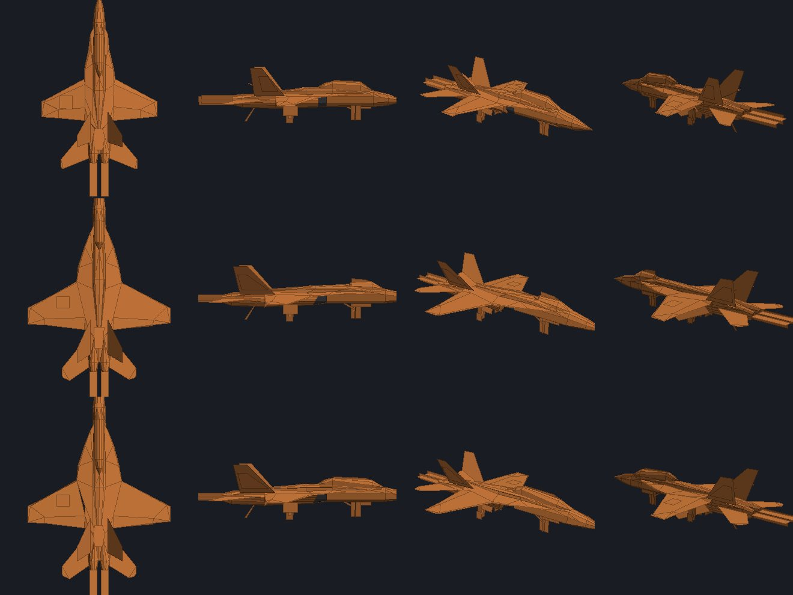
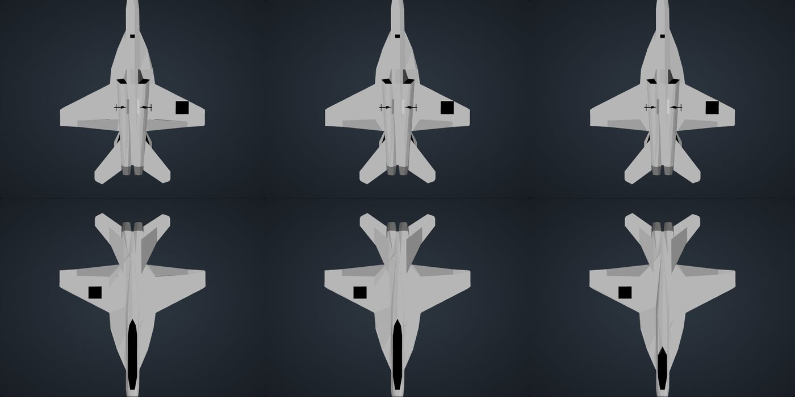
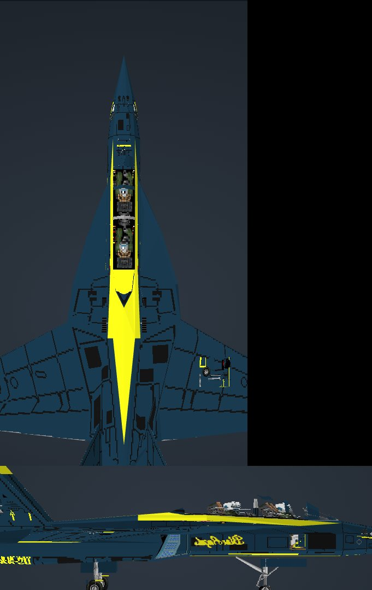
See them all in the全部都在 F/A-18 ShowcaseF/A-18 展示.
The F-14: nose, weapons and moreF-14：機鼻、武器和更多
First try: a whole new F-14 from a 3D model
第一次嘗試：從 3D 模型做一架全新的 F-14
I gave Claude a SketchUp F-14 with 77,000 triangles. It lofted a new 369-vertex body, kept the original moving parts and LODs, and built the draw order itself. The first build crashed; the second one flew. But it looked too far from the F-14 we know in FA, so we paused it and went back to refining the existing shape.
我給 Claude 一個 77,000 個三角形的 SketchUp F-14。它放樣出 369 個頂點的新機身，保留原本會動的零件和 LOD，自己建立繪製順序。第一版當掉，第二版能飛。但它跟大家熟悉的 FA F-14 差太多，所以先暫停，回頭修整原本的外形。
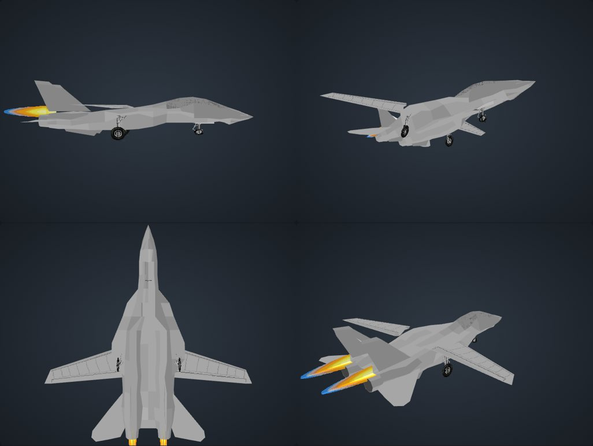
A new nose, five versions
新機鼻，五個版本
The factory nose looked droopy and lumpy. The nose is now generated from curves: the tip sits on the fuselage centreline, the top and bottom lines blend smoothly, and the normals are calculated from the curve. One lesson: FA shades these faces smoothly (Gouraud) from per-vertex shades, so only the outline and the normals show. A flat preview made it look faceted, so Claude wrote a Gouraud preview to match the game. Version 4 had too many small faces and looked pitted; version 5 followed my side-view drawings with 57 vertices and 94 faces.
原廠機鼻看起來下垂又凹凸不平。現在機鼻用曲線產生：尖端在機身中心線上，上下輪廓平順銜接，法向量由曲線算出。學到的一課：FA 用每個頂點的明暗把這些面平滑上色（Gouraud），所以只看得出輪廓和法向量。平面上色的預覽看起來一格一格的，所以 Claude 另寫了一個 Gouraud 預覽，跟遊戲一致。第 4 版小面太多，看起來坑坑洞洞；第 5 版照我的側視圖，用 57 個頂點、94 個面。
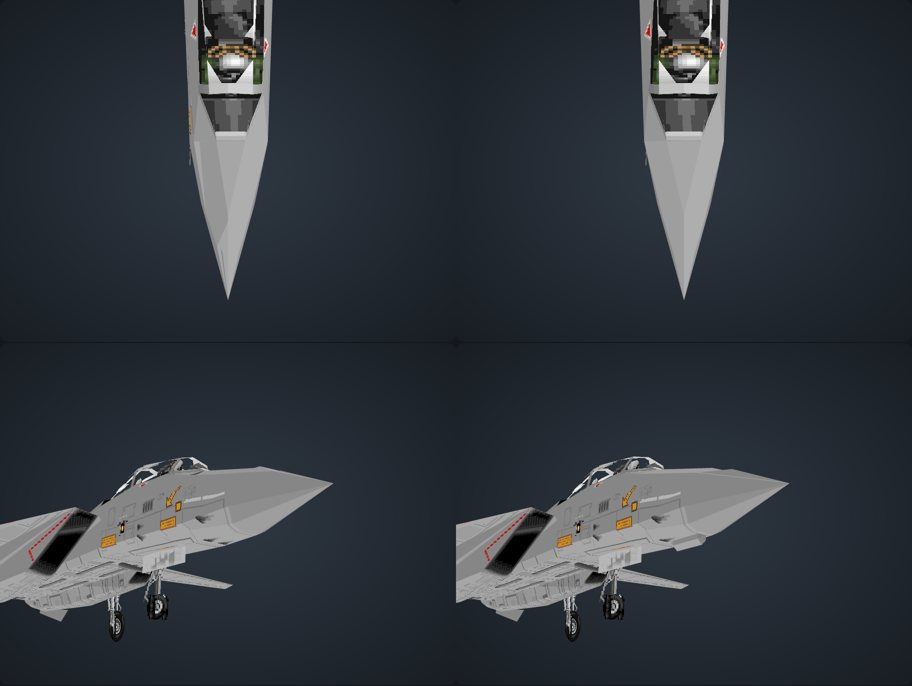
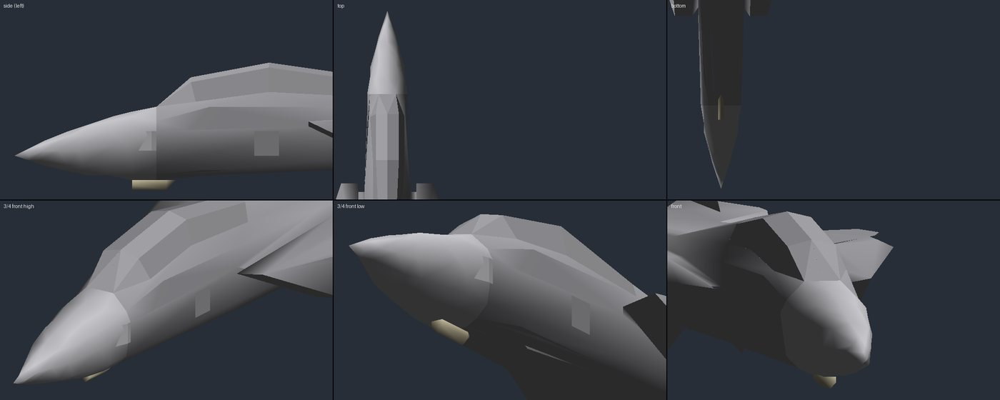
Weapons that come and go
會出現也會消失的武器
FA never draws the stores on a jet. Claude found where each station's weapon type and count live in memory, and added x86 to the SH that reads them every frame. Now the Phoenixes, Sparrows, Sidewinders, bombs and tanks you load are drawn on the pylons, vanish as you fire them, and dropped tanks fall away.
FA 從來不會在飛機上畫出掛載。Claude 找到每個掛點的武器種類和數量存在記憶體的哪裡，並在 SH 裡加上每一幀讀取它們的 x86。現在你掛的鳳凰、麻雀、響尾蛇、炸彈和副油箱都會畫在派龍架上，射出就消失，拋掉的油箱會往下掉。
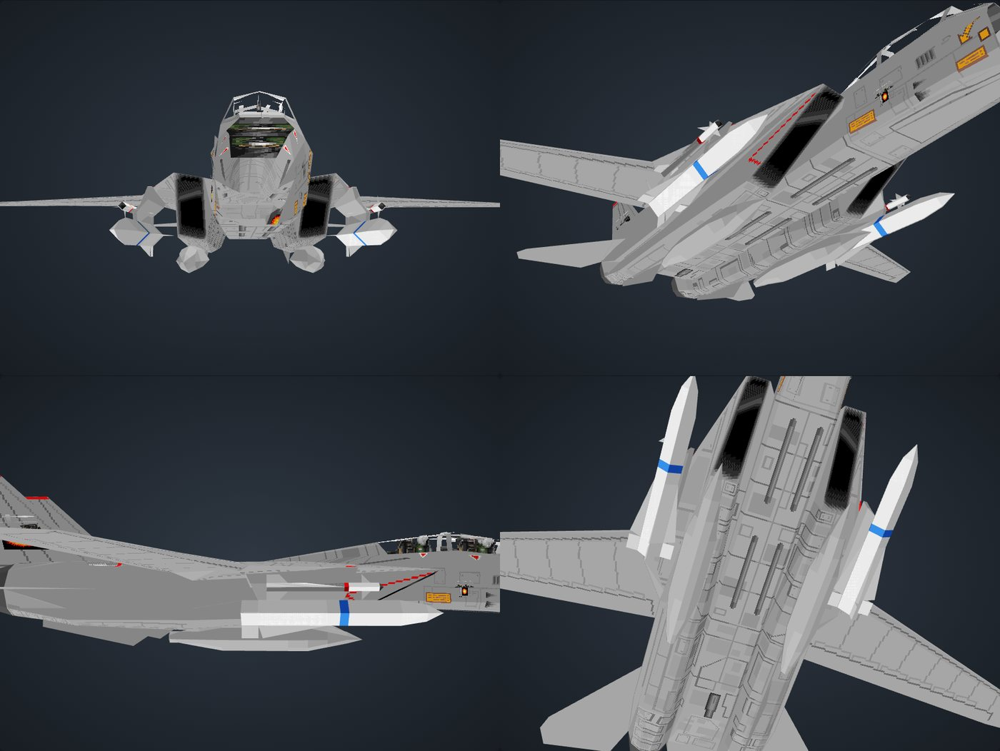
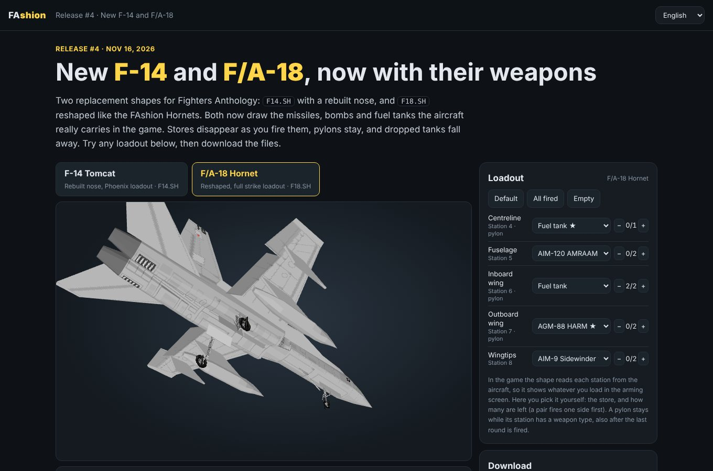
An afterburner that burns真的在燒的後燃器
The factory F-14 and F/A-18 flames are static. AUR.SH already had a much better one, and Claude worked out how it is done: it uses an opcode that switches between three texture frames every game frame, like a flipbook. We ported that idea to the F-14, then to the F/A-18 and all its variants.
原廠 F-14 和 F/A-18 的火焰是靜止的。AUR.SH 的火焰好得多，Claude 弄清楚了它的做法：它用一個指令在每一幀切換三張貼圖，就像翻頁動畫。我們把這個做法搬到 F-14，再到 F/A-18 和它的所有衍生型。
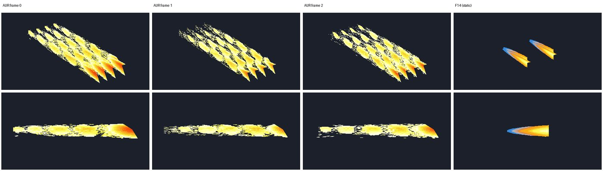
- v1: I liked it in the game, but asked for a flame 4/5 as long, no stray whiskers at the tail, and colours like real photos.
- v2: the frames are now drawn by a script: orange and yellow at the nozzle, then white, then bluish white, with bright shock rings that move between frames. Approved: “very successful”.
- Grow: I wanted the flame to light up over about 3 seconds, not pop on. x86 inside the SH reads the game clock, remembers when each aircraft lit its burner, and stretches the flame from 15% to 100%.
- v1：進遊戲我很喜歡，但希望長度變成 4/5、尾端不要有雜鬚、顏色像真實照片。
- v2：火焰貼圖改用程式畫：噴嘴處橘黃，接著白色，再到帶藍的白色，明亮的震波環在每一幀之間移動。通過：「非常成功」。
- 漸長：我希望火焰在大約 3 秒內點燃，而不是一下子出現。SH 裡的 x86 讀取遊戲時鐘，記住每架飛機何時點燃後燃器，把火焰從 15% 拉長到 100%。
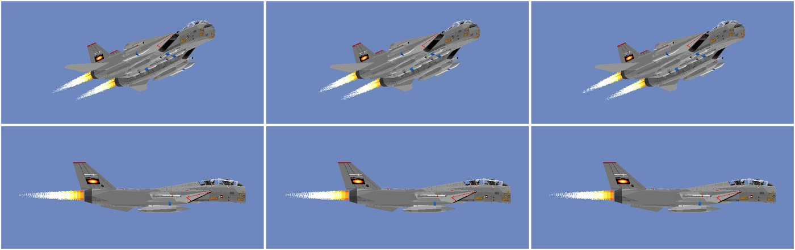
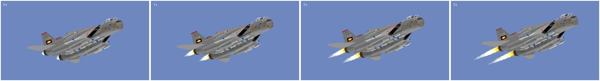
Landing gear with spinning wheels輪子會轉的起落架
The factory gear is a few flat pictures crossed together. I asked for real 3D gear: small twin nose wheels, big single main wheels, spinning faster with speed and stopping when the jet is still or fast. Claude found the aircraft's speed in memory and wrote the spin into the SH as x86. It took twelve F-14 versions; this is the part of the story with the most dead ends, and the most learned.
原廠起落架只是幾張交叉的平面圖。我要真正的 3D 起落架：前面是小的雙輪，主輪是大的單輪，速度越快轉得越快，停著或飛快時就不轉。Claude 在記憶體裡找到飛機的速度，用 x86 把轉動寫進 SH。F-14 一共做了十二版；這是整個故事裡走過最多死路、也學到最多的部分。
The left wheel worked; the nose and right wheels were missing in the game. I also did not like the polygon wheels: I wanted a round texture that rotates. Later we found the cause: a nested part needs a 6-byte header that v1 left out.
This led to the biggest discovery: FA reads an SH's file size as a 16-bit number. This file was 68,096 bytes, so the end of it was cut off.
One round, double-sided hub face per wheel, rotated by x86, and the file back under 64 KB.
Vertical nose strut, black tyre bands, centred axles, one shared spin table to save 512 bytes. v8: “very successful”.
Longer main struts, stop above 180 knots, a nose leg with housing, piston, collar, fork and launch bar, and the original strut texture on the new struts.
The same method, written up in the notes, was applied to F18.SH in a few versions.
左輪正常；前輪和右輪在遊戲裡不見了。我也不喜歡多邊形輪子：我要的是會旋轉的圓形貼圖。後來找到原因：巢狀零件需要一個 6 位元組的標頭，v1 漏了。
這帶出最大的發現：FA 用 16 位元讀 SH 的檔案大小。這個檔有 68,096 位元組，所以尾巴被截掉了。
每個輪子一個圓形、雙面的輪轂面，由 x86 轉動，檔案也回到 64 KB 以下。
垂直的前起落架支柱、黑色胎面、置中的輪軸、三組共用一張轉動表省下 512 位元組。v8：「很成功」。
加長主支柱、超過 180 節停轉、有外筒、活塞、套環、叉架和彈射桿的前起落架，新支柱貼上原本的支柱貼圖。
同一套方法寫進筆記後，用幾個版本套到 F18.SH 上。
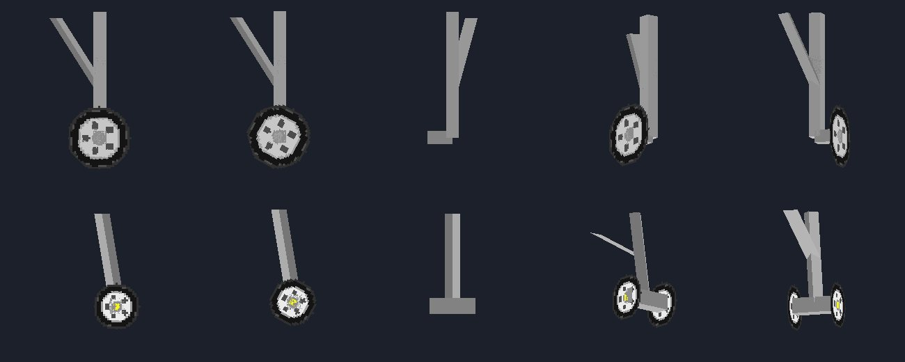
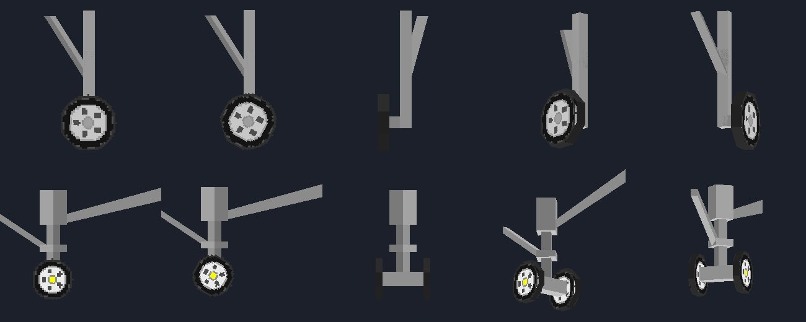
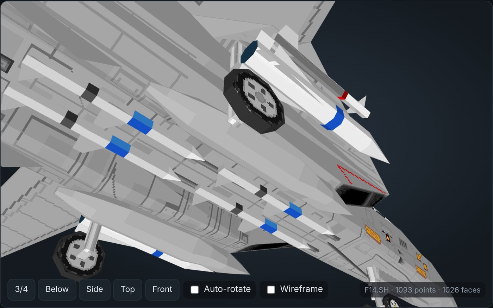
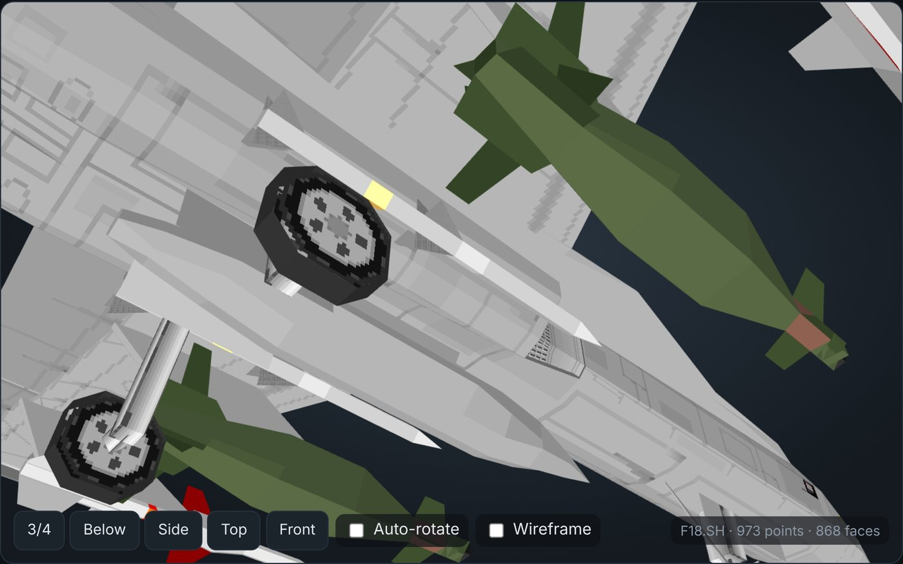
Hidden limits we found on the way一路上找到的隱藏上限
Each of these cost us a crash or a broken build first. They are useful to anyone modding FA, with or without Claude.
每一條都是先當機或壞掉一次才找到的。不管有沒有用 Claude，改 FA 的人都用得上。
| Limit | What happens |
|---|---|
| SH file must be under 65,536 bytes | FA reads the size as 16-bit. Exactly 65,536 gives “Not enough memory.”; larger files are silently cut short. |
| 900 vertices per shape | FA's vertex table holds 900 entries. Slots near the top looked unsafe in testing; the factory shapes stay under about 640. |
| New data goes before the signature | FA only loads the code section up to the 01 02 03 02 01 02 03 02 01 signature. Our first F-14 test put data after it and crashed as soon as the outside view was shown. |
| No z-buffer | FA draws in painter's order through plane tests in the SH. Every new part needs its place in that tree, or it shows through. |
| Smooth faces ignore their colour | Faces flagged for Gouraud shading take their light from per-vertex records, so new vertices need those records too, or they show colour noise. |
| A patched EXE must be named FA.EXE | FA loads RELEASE\<exe name>.SMS; renamed builds fail with “Not enough memory.” |
| 上限 | 會發生什麼 |
|---|---|
| SH 檔要小於 65,536 位元組 | FA 用 16 位元讀檔案大小。剛好 65,536 會出現「Not enough memory.」；更大的檔會被默默截斷。 |
| 每個外形 900 個頂點 | FA 的頂點表只有 900 格。測試時靠近上面的格子看起來不安全；原廠外形都在大約 640 以下。 |
| 新資料要放在簽章之前 | FA 只載入程式區段到 01 02 03 02 01 02 03 02 01 簽章為止。我們第一個 F-14 測試把資料放在後面，一切到外部視角就當掉。 |
| 沒有 z-buffer | FA 依 SH 裡的平面判斷用畫家演算法的順序來畫。每個新零件都要在這棵樹裡有位置，不然會穿透。 |
| 平滑面不看自己的顏色 | 標記為 Gouraud 的面，光影來自每個頂點的紀錄，所以新頂點也要有這些紀錄，否則會出現雜色。 |
| 修改過的 EXE 必須叫 FA.EXE | FA 會載入 RELEASE\<exe 名稱>.SMS；改了名的版本會出現「Not enough memory.」 |
The tools and notes, for other modders給其他改模型玩家的工具與筆記
Everything is on GitHub. The generator scripts live in tools/shgen/, and everything we learned about the SH format is written down in skill/SH_edit_note.MD (in Traditional Chinese), so the next model starts from what we already know.
全部都在 GitHub 上。產生器腳本在 tools/shgen/，關於 SH 格式學到的一切都寫在 skill/SH_edit_note.MD，下一個模型可以從我們已經知道的地方開始。
| Script | What it does |
|---|---|
| sh_renormal.py | Recompute face normals and plane points after vertices move. |
| sh_morph.py | Carry a vertex edit from one SH to a sibling SH. |
| sh_tjfix.py | Close gaps from broken T-junctions and moved part buffers. |
| sh_subdivide.py | Split faces into smaller ones by adding new vertices. |
| f14_nose.py | Generate the F-14 nose from curves. |
| f14_stores.py, f18_stores.py | Draw the loaded weapons and tanks on the pylons. |
| sh_ab_flame.py, ab_flame_tex.py | Animated, growing afterburner and its texture frames. |
| f14_gear.py, f18_gear.py | 3D landing gear with spinning wheels. |
| f18g_growler.py | EA-18G Growler pods and tanks. |
| glb2sh/ | Build a new SH body from a 3D model (.glb). |
| 腳本 | 用途 |
|---|---|
| sh_renormal.py | 頂點移動後重算面的法向量和平面點。 |
| sh_morph.py | 把一個 SH 的頂點修改搬到同系列的另一個 SH。 |
| sh_tjfix.py | 補上 T 型接點斷開和零件位移造成的縫隙。 |
| sh_subdivide.py | 加入新頂點，把面切成更小的面。 |
| f14_nose.py | 用曲線產生 F-14 機鼻。 |
| f14_stores.py、f18_stores.py | 把掛載的武器和副油箱畫在派龍架上。 |
| sh_ab_flame.py、ab_flame_tex.py | 會動、會漸長的後燃器和它的貼圖畫格。 |
| f14_gear.py、f18_gear.py | 輪子會轉的 3D 起落架。 |
| f18g_growler.py | EA-18G Growler 的莢艙和副油箱。 |
| glb2sh/ | 從 3D 模型（.glb）做出新的 SH 機身。 |
The web SH Editor and SH Gallery came out of the same work: they read and draw the same files right in the browser.